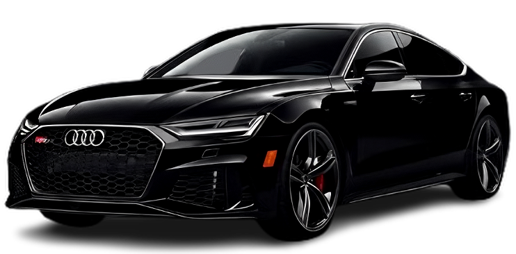
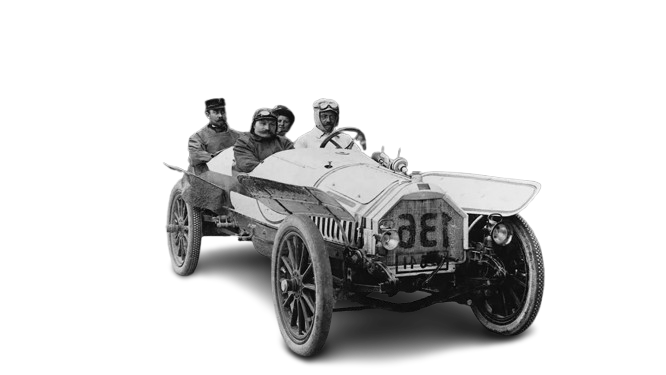
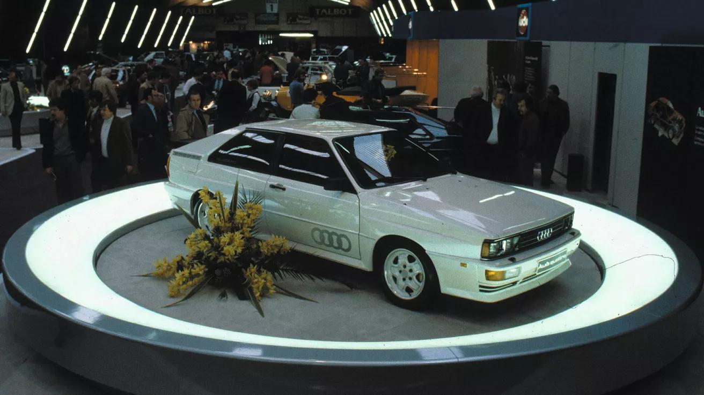
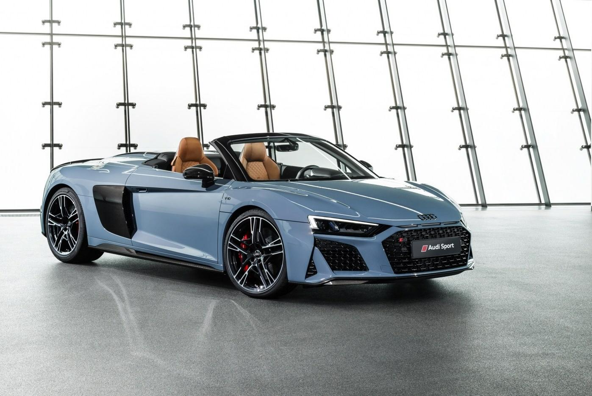
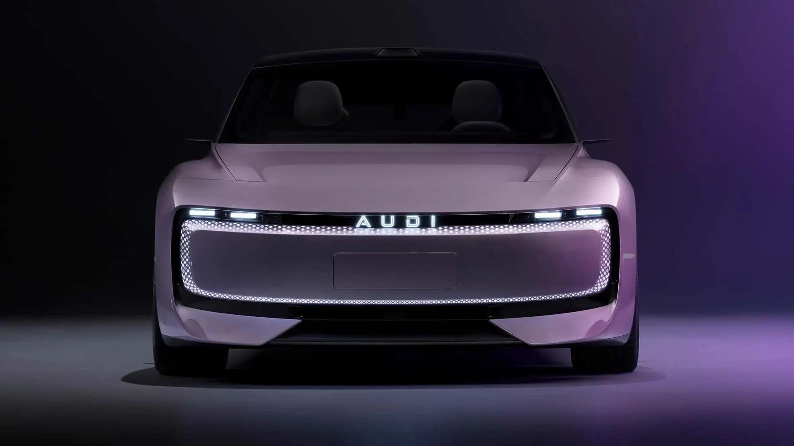

Німецька автомобільна компанія в складі концерну Volkswagen Group.
Дізнайтеся більше про еволюцію чотирьох кілець: від перших класичних моделей до сучасних електромобілів лінійки e-tron та спортивних версій RS.

Німеччина вважається центром світового автомобілебудування.

У 1909 році Август Горьх створив нову компанію. Оскільки він уже не мав права використовувати власне прізвище Horch як бренд, було придумано нову назву. Слово Horch у перекладі з німецької означає "слухай". Латиною це слово звучить як Audi. Так у 1910 році з'явилася компанія Audi.



quattro — фірмова система повного приводу Audi, представлена у 1980 році. Вона забезпечує рівномірний розподіл потужності між колесами, що покращує керованість, стійкість автомобіля та безпеку руху на слизьких або складних дорогах.
Virtual Cockpit — цифрова панель приладів, яка замінює традиційні аналогові датчики. Система дозволяє водієві переглядати навігацію, швидкість, інформацію про автомобіль та мультимедійні функції на великому екрані високої якості.
Технологія e-tron використовується в електромобілях Audi. Вона включає сучасні електродвигуни, потужні акумулятори та системи енергозбереження. Основною перевагою є екологічність, економічність та зменшення шкідливих викидів у навколишнє середовище.